ACTION
Transfers, bills and subscriptions are separated into distinct user intents.
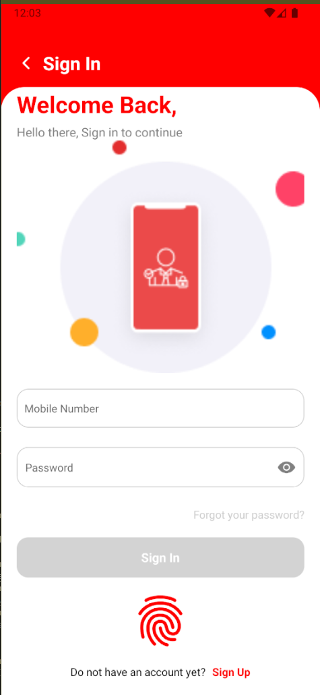
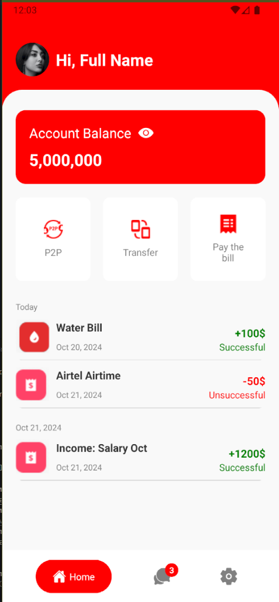
Money movement needs clear state: what action is happening, who receives it, whether it succeeded and what record remains afterward.
The supplied screens emphasize transaction steps, confirmation states, receipts and account history so the interface can show more than a single success toast.
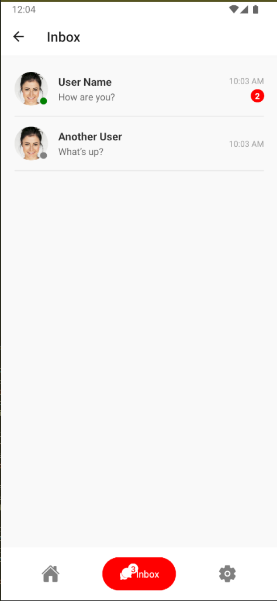
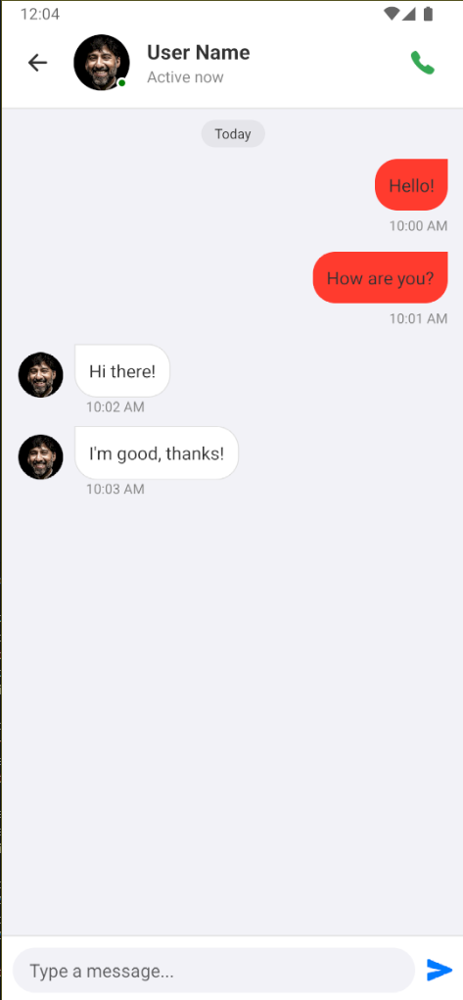
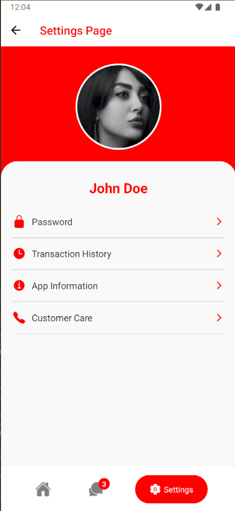
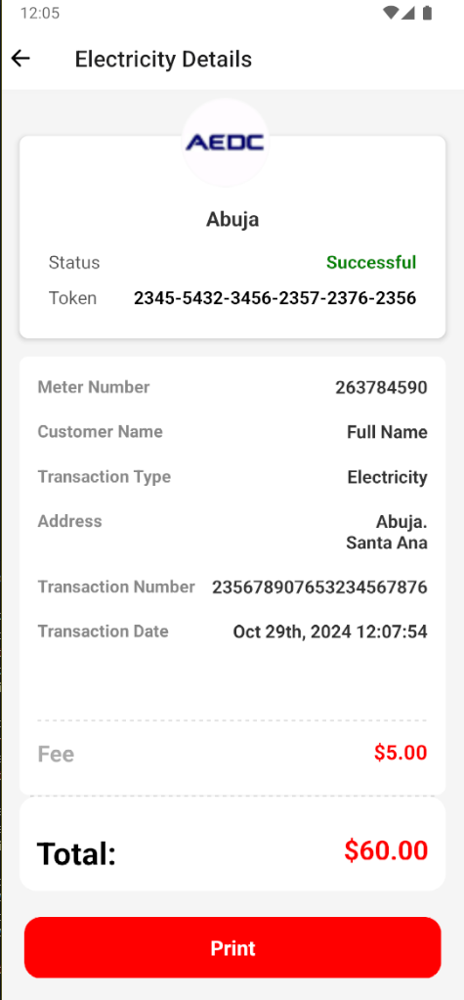
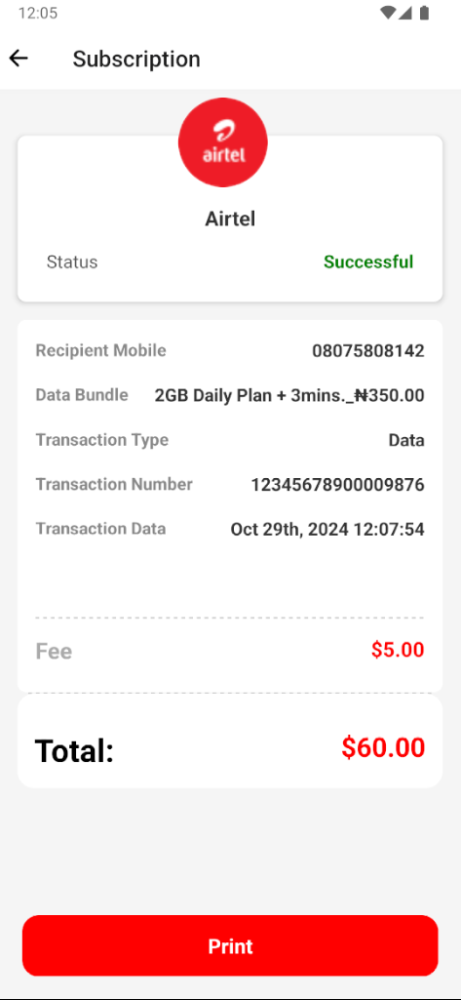
This section translates the supplied interface into the sequence of responsibilities visible in the build record.
Transfers, bills and subscriptions are separated into distinct user intents.
Success and unsuccessful states remain visible after the action.
Receipts and transaction history leave a durable record users can inspect.
A build record that connects the visible interface to the job the product is trying to do.
These are the actual project images supplied for the archive. They are shown without fabricated performance claims or fake client outcomes.
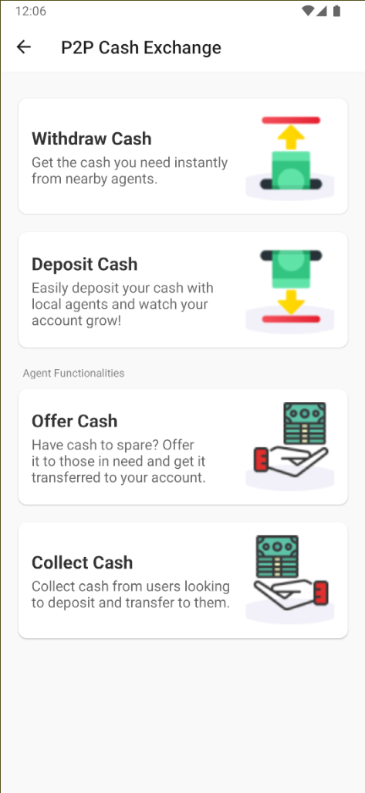
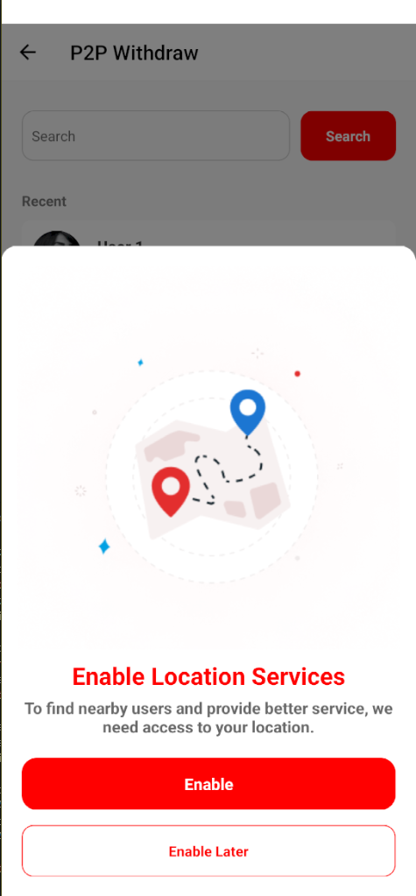
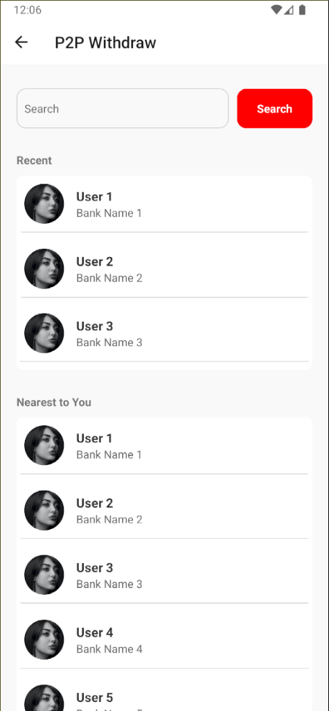
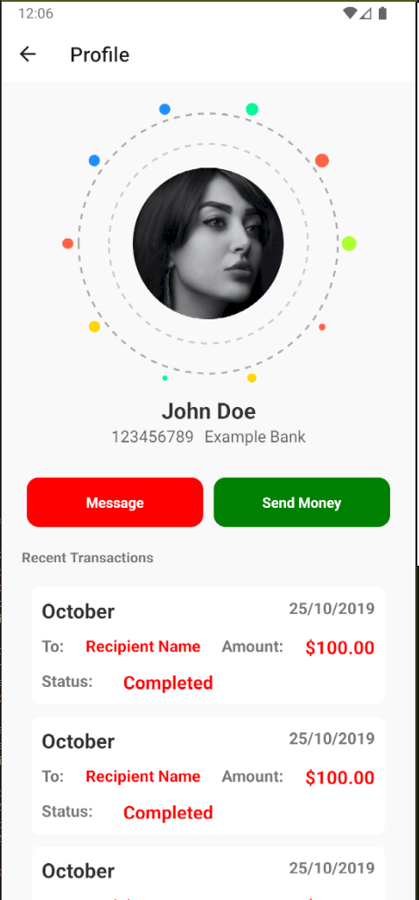
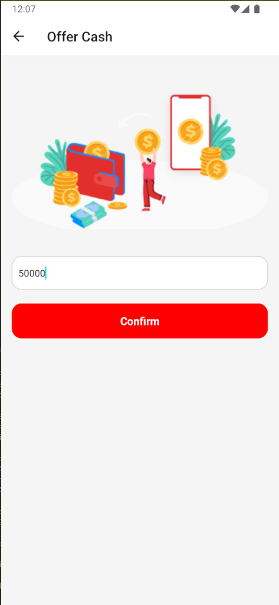
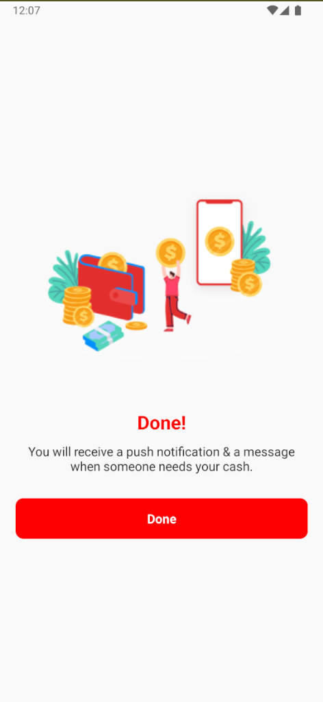
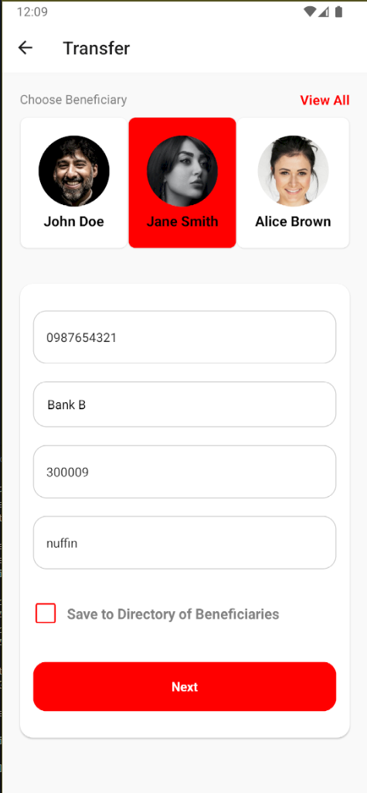
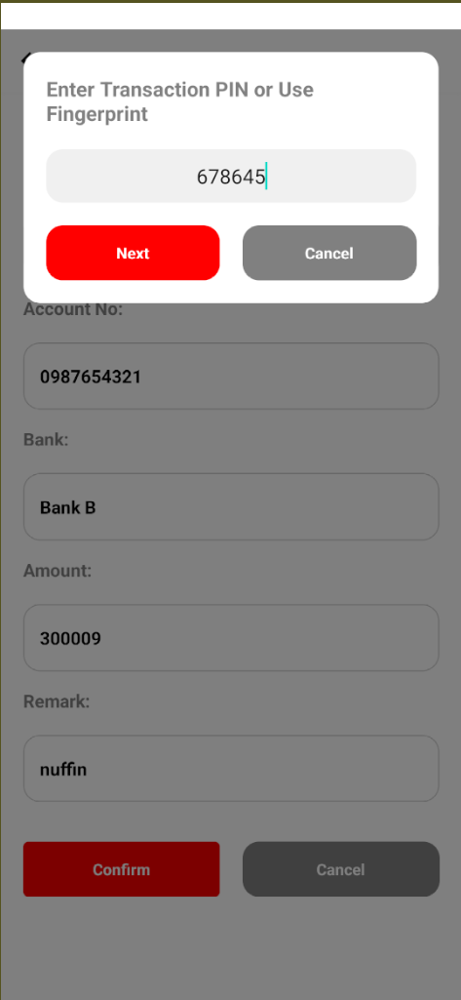
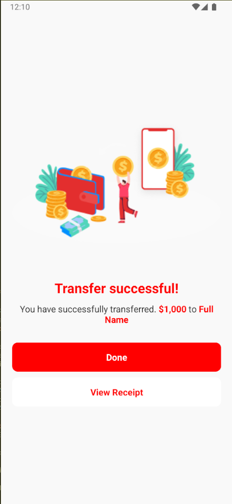